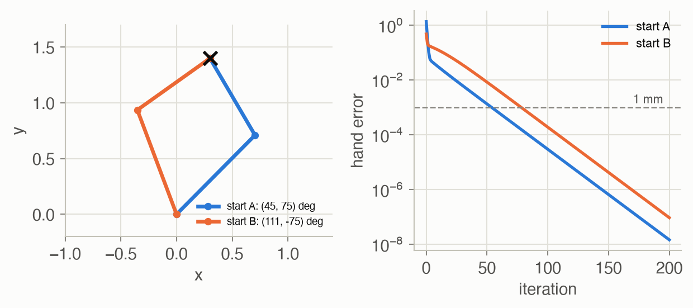
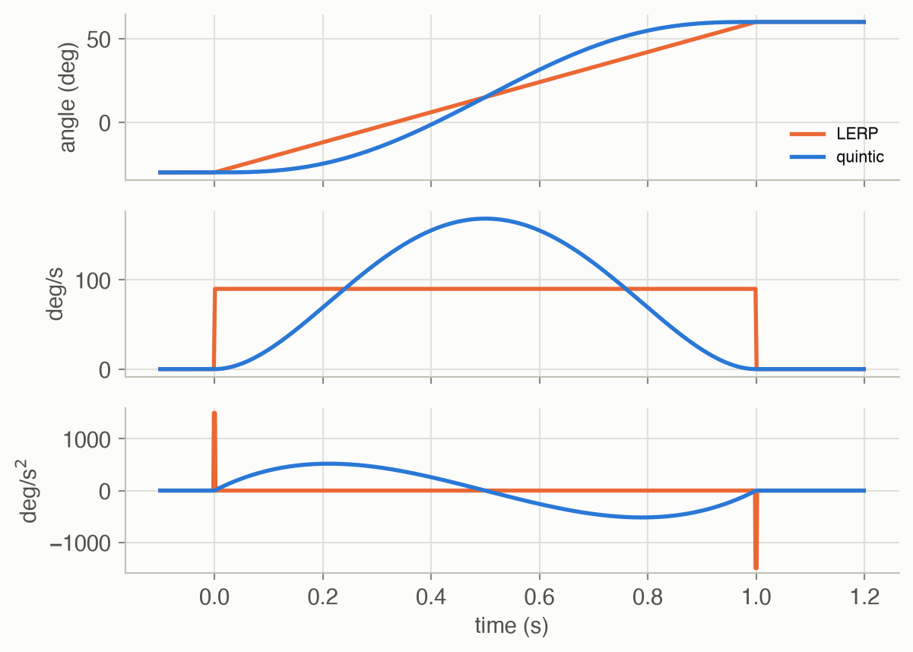
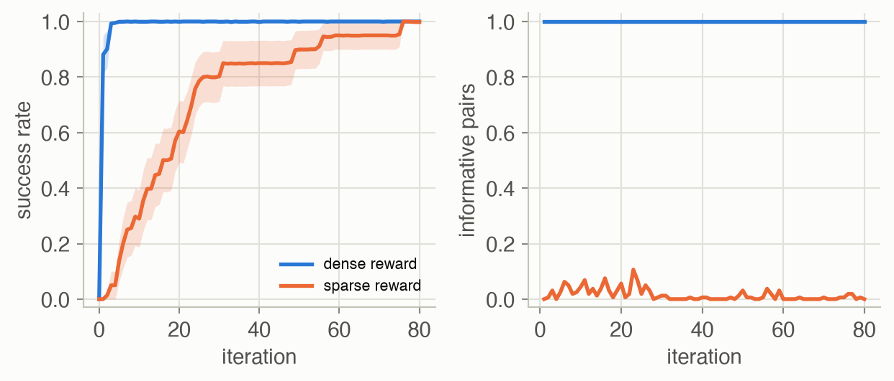

Week 2 · Robot Control & MDPs
Lecture of 23 February 2026 · guest: Abhishek Gupta
Big picture
Where this week fits
Week 1 argued that robots need feedback: a policy that looks again at every step beats a plan executed blind. This week builds the vocabulary for both halves of that statement. The first half is robot control: how to describe a robot’s body, where its hand is for given joint angles, which joint angles put the hand where you want it, and how motors follow a motion smoothly and accurately. The second half is the Markov decision process (MDP): the mathematical frame in which a policy picks actions, the world responds, and rewards say how well it went. Every later week works inside this frame. Week 3 learns policies by copying an expert, Weeks 4 and 5 learn them from reward, and from Week 6 on the policies grow into large generative models.
The question this week answers: how does a robot turn a goal into motor commands, and how do we describe the decision-making above that, for any robot, in one language?
The key ideas at a glance
- Rigid bodies and frames. A robot is a chain of rigid parts. A part’s pose is a position plus an orientation, stored as a \(4 \times 4\) (or, in the plane, \(3 \times 3\)) matrix; multiplying these matrices converts coordinates between frames, such as from a camera on the roof to the car’s base.
- Three spaces. The configuration space holds every combination of joint angles; the workspace holds every point the hand can reach; the task space is where the job itself is defined. An arm with more joints than the task needs is redundant: it can move its elbow while keeping its hand still.
- Kinematics. Forward kinematics (joint angles to hand pose) is a formula. Inverse kinematics (hand pose to joint angles) can have several answers or none; in practice it is solved by gradient steps using the Jacobian.
- Trajectories and PID. A robot cannot jump to new joint angles. Quintic time scaling starts and ends a move with zero velocity and acceleration, unlike straight-line interpolation. A PID controller then makes the motors follow: the P term pulls towards the target, the D term damps, the I term cancels a steady load such as gravity.
- Policies, states and observations. A policy \(\pi_\theta(a_t \mid o_t)\) is a distribution over actions given what the robot observes. Unlike a classifier’s mistake, a policy’s action changes what it sees next.
- The MDP. States, actions, transition probabilities and a reward: \((\mathcal{S}, \mathcal{A}, P, R)\). The goal is the policy with the highest expected (discounted) return. Whether rewards are sparse or dense can decide whether learning gets started at all.
Vocabulary
| Term | Plain meaning |
|---|---|
| Pose | Where a rigid body is and which way it faces |
| Frame | A coordinate system attached to a body: the base, a camera, the gripper |
| Link, joint, end effector | A rigid part, a connection that lets two parts move, and the tool at the end of the arm |
| Degrees of freedom (DoF) | How many numbers it takes to pin down the robot’s configuration |
| Configuration space (C-space) | The set of all joint configurations |
| Workspace, task space | Points the hand can reach, and the space the task is defined in |
| Forward / inverse kinematics | Joint angles to hand pose, and hand pose back to joint angles |
| Jacobian | How much the hand moves when each joint turns a little |
| Waypoint | An intermediate target on the way from one configuration to the next |
| PID controller | A feedback rule that turns tracking error into motor commands |
| Policy | The rule that picks an action from what the robot observes |
| State, observation | The complete description of the world, and the partial view the sensors give |
| MDP | Markov decision process: states, actions, transitions and rewards |
| Return, discount | Total reward of a run, and the factor that makes later rewards count for less |
After this week you can
- Chain homogeneous transforms to move a point between frames, and count a robot’s degrees of freedom.
- Explain why an obstacle in the workspace becomes a strangely shaped region in configuration space, and why inverse kinematics can have two answers.
- Say what each term of a PID controller does, and why a quintic time scaling is kinder to motors than linear interpolation.
- Write down an MDP, the probability of a trajectory, and the expected return, and compute them for a small example.
- Explain why a sparse reward can stall learning.
Intuition
TipAnalogy
Think of driving to a friend’s house. Somewhere in your head a decision is made: “turn left at the next corner”. That is the policy. Your arms translate “turn left” into a steering-wheel angle: inverse kinematics. You turn the wheel smoothly rather than yanking it: a trajectory. And while you turn, you keep correcting, because the road is bumpy and the car drifts: feedback control. This lecture covers the bottom three layers first, then gives the top layer, the decisions, a precise mathematical form.
A robot is a chain of rigid bodies
Quadrupeds, drones, dexterous hands and arms look like different problems, but almost all of them can be described the same way: as rigid bodies moving through space ▶ 02:09. “Rigid” means the distance between any two points on the body never changes, so one frame attached to the body tells you where all of it is ▶ 02:39. On the ground, a pose takes three numbers (x, y and a heading), the group called SE(2); in space it takes six (three positions, plus roll, pitch and yaw), SE(3). In code a pose is a matrix that holds a rotation and a translation ▶ 03:41, and a rotation matrix must be orthogonal with determinant 1, so it never stretches or mirrors the body ▶ 04:44.
The payoff is chaining. A self-driving car’s lidar sees a pedestrian in its own frame; to decide whether to brake, the car needs the pedestrian in its base frame. Multiplying the matrices that relate the frames does the conversion ▶ 05:14. Worked example 1 does it with numbers, and Equation 1 gives the formula.
Joints, degrees of freedom and three spaces
An arm or a humanoid is not one rigid body but several: links connected by joints, ending in an end effector such as a gripper ▶ 07:19. The end effector shapes the action space: a suction gripper is on or off, a parallel gripper has one opening width, a dexterous hand can have more than 20 degrees of freedom ▶ 09:24. Most robot joints are revolute: they rotate about one axis, like an elbow ▶ 10:27.
The degrees of freedom count how many independent numbers fix the robot’s configuration ▶ 11:31; the Grübler–Kutzbach formula (Equation 2) counts them from the links and joints ▶ 12:04. Three spaces then matter:
- The configuration space is the set of all joint configurations ▶ 12:35. For an arm with two revolute joints it is not a flat square but a torus, because each angle wraps around: 359° and 1° are 2° apart, not 358° ▶ 13:05. A network that takes joint angles as input has to respect that.
- The workspace is the set of points the hand can reach ▶ 13:40. The robot perceives the task here (the cup is on the table) but acts in configuration space (turn these joints).
- The task space is where the objective lives, independent of the robot: for wiping a whiteboard, the board’s surface ▶ 16:45. A 7-joint arm placing its hand in a 6-number pose has one joint to spare. That redundancy lets it swing its elbow while holding a mug perfectly still, which helps it avoid obstacles ▶ 18:54.
An obstacle becomes a shape in joint space
Put a round obstacle next to a two-joint arm. In the workspace it is a disc. In configuration space it is the set of all (shoulder, elbow) angle pairs at which some part of the arm touches the disc, and that set has a very different shape ▶ 14:43. In the toy below, a disc of radius 0.25 blocks 8.2% of all joint configurations, all at shoulder angles between -18° and 94°. Between 32° and 46° the upper arm itself reaches the disc, so every elbow angle is blocked: a bar across the whole square. More than 6° away from the bar on either side, only the forearm can hit, and only when it is bent towards the disc: with a positive elbow angle below the bar, a negative one above it.
The 1990s recipe for motion planning was to build exactly this picture, mark the forbidden region, and search the rest for a path ▶ 15:14. Moving both joints at a steady rate from start to goal, a straight line in configuration space, sweeps the arm through the disc: 20% of that line is blocked. A breadth-first search over the free cells finds a detour of 116 grid moves, against 65 for the straight line: it turns the shoulder the other way, through 180°, and swings the arm around below the base. The recipe stops scaling as the number of joints grows: the grid has \(180^n\) cells for \(n\) joints. Learned policies instead pick up, from experience, which actions lead into trouble, without building the map ▶ 15:45.
What to watch for. First the grey region fills in: every pair of joint angles at which some part of the arm touches the disc. Then both joints turn at a steady rate towards the goal. In the square the dot moves in a straight line, and the moment it reaches the grey region, the arm in the room turns orange with its forearm in the disc. The search’s answer starts the dot in the opposite direction. It slides off the left edge of the square and reappears on the right, because a shoulder angle of -180° is the same as +180°; in the room, the arm swings round underneath its base and arrives from the far side. The detour takes 116 grid moves against the blocked line’s 65, and it never touches grey.
![Two panels. Left: a two-link arm drawn from a base at the origin pointing right and slightly down (start) and pointing up and to the left (goal), with a grey disc to the upper right of the base. An orange curve traced by the hand arcs around the right of the disc and over the top, and an orange arm drawn partway along it, pointing up and to the right, touches the edge of the disc. A blue hand path swings the other way, around the left and below the base. Right: a square plot of shoulder angle against elbow angle from -180 to 180 degrees. The grey forbidden region is a vertical bar across the full height at shoulder angles of about 32 to 46 degrees, with a lobe reaching to about -18 degrees at positive elbow angles and another reaching to about 94 degrees at negative elbow angles. An orange straight line from the start point to the goal point crosses the region; a blue path goes around it.](w02-robot-control-mdps_files/figure-html/fig-cspace-output-1.png)
Forward is easy, inverse is a search
Forward kinematics answers: given all joint angles, where is the hand? Multiply the transforms along the chain and read off the answer; there is exactly one ▶ 19:24. Inverse kinematics asks the reverse, which is the question a policy usually poses: “put the hand there; which joint angles do that?” ▶ 19:55. The answer can be two configurations (elbow bent one way or the other), infinitely many (a redundant arm), or none (out of reach). For complex robots there is often no closed-form solution, so IK is solved as an optimization: measure the distance between the hand and the target, and nudge the joints downhill ▶ 20:58. The nudge uses the Jacobian, which says how much the hand moves when each joint turns a little ▶ 21:30. Which solution the descent finds depends on where it starts (Figure 4).
Smooth moves and a controller that keeps correcting
Knowing the goal angles is not enough: the robot cannot teleport. The simplest way to get there is linear interpolation (LERP): split the move into evenly spaced waypoints ▶ 23:03. The trouble is at the ends. The joint jumps from rest to full speed in one step and stops just as abruptly, which demands huge accelerations and shakes the hardware ▶ 24:07. Quintic time scaling replaces the straight line with a fifth-degree polynomial whose velocity and acceleration are zero at both ends ▶ 24:38 (Equation 5, Figure 5).
Even perfect waypoints are not followed perfectly: gravity, friction and imperfect motors push the joint off course. A PID controller corrects continuously ▶ 26:10. The lecture’s picture: the proportional term is a spring that pulls harder the further off you are; the integral term is “anti-gravity”, building up to cancel a steady load; the derivative term is a damper that stops overshoot ▶ 27:12. In this page’s toy, a single joint lifts a rod against gravity. With only the spring, it swings back and forth through the whole move and the hold after it, over a range of 21° in the last half second, and the swings are still growing. Adding the damper stops the swinging but leaves the rod hanging 2.5° low, and the integral term removes that sag (Figure 6). With LERP waypoints instead of quintic ones, the controller’s largest change of torque between two physics steps is 6.6 times larger.
From control to decisions
Control makes a robot follow a path. Real tasks need more: a sequence of decisions toward a long-term goal in a world that is noisy and only partly known ▶ 28:14. The lecture’s example is a two-armed robot cutting (toy) sushi, a precise, long task with 14 degrees of freedom to command many times a second, while low-level controllers make the motors follow ▶ 28:45.
The decision rule is the policy. It looks like an image classifier: input in, scores over outputs out. A camera image of a snowy road goes in; probabilities for “left”, “straight”, “right” come out ▶ 30:51. The difference is consequential: a classifier that mistakes a cat for a dog leaves the cat unchanged, but a policy that turns left into a ditch changes everything it will see next ▶ 32:23. In general a policy outputs a distribution (a stochastic policy); a deterministic one puts all its probability on one action ▶ 32:55.
What the policy sees is an observation, not the state. The state is the full truth (the car’s exact position, speed, heading); the observation is what the camera makes of it, which changes with snow or darkness while the state does not ▶ 33:25. The state has the Markov property: once you know it, the past adds nothing to predicting the future ▶ 34:59. Observations usually do not.
The MDP: one language for every robot
A Markov decision process packages this into four parts: the states, the actions, the transition probabilities, and a reward function ▶ 37:03. Its value is generality: the same learning algorithms then apply to a humanoid with 27 degrees of freedom and to chess ▶ 37:34.
- States and actions can be discrete (squares on a chessboard, arrow keys) or continuous (joint angles, a VR controller’s motion) ▶ 38:40. In a continuous space you cannot keep a table entry for every state, so you need function approximators such as neural networks.
- Transitions are deterministic only in an ideal world. Turn the steering wheel 5° on ice and the car may not follow the arc you expect, so robotics models the next state as a random draw ▶ 39:11.
- Rewards can be sparse, such as 1 for lifting the object and 0 otherwise, or dense, such as minus the hand’s distance to the object. The lecturer’s pick-and-place agent failed with the sparse reward and learned with the dense one ▶ 40:45. This page’s random-search toy shows why: with a sparse reward, almost every trial scores 0, and comparing zeros teaches nothing (Figure 11).
A run of the policy is a trajectory: state, action, state, action, and so on. Its probability multiplies the chance of the start state, the policy’s choice at each step, and the world’s response ▶ 42:20. Tasks have a horizon: a fixed number of steps, or until the episode ends ▶ 42:50. Over an endless horizon, rewards are discounted by a factor \(\gamma\) per step so the total stays finite and nearer rewards count more ▶ 44:23. The goal is then the policy with the highest expected discounted return ▶ 44:54.
The discount is not a technicality: it changes which behavior is best. In the corridor toy below, a robot can walk 2 cells left to a reward of 1 or 6 cells right to a reward of 10. Going right is better only when \(\gamma\) is above 0.562. If each move slips the wrong way with probability 0.2, the far reward takes longer to reach on average, and the threshold rises to 0.643 (Equation 11).
Key concepts & formulae
The lecture writes \(s_t\) for the state, \(o_t\) for the observation and \(a_t\) for the action at step \(t\), following dynamic programming; optimal control writes \(x_t\) and \(u_t\), and a cost \(c(x, u) = -r(s, a)\) ▶ 36:03. The ADM book writes the transition model as \(T(s' \mid s, a)\) where the lecture writes \(P(s_{t+1} \mid s_t, a_t)\), and the value of a policy as \(U^\pi\).
Poses and frames
\[ \begin{gathered} T = \begin{bmatrix} \cos\theta & -\sin\theta & t_x \\ \sin\theta & \cos\theta & t_y \\ 0 & 0 & 1 \end{bmatrix} \\[4pt] \begin{bmatrix} \mathbf{p}^{\text{base}} \\ 1 \end{bmatrix} = T_{\text{base}\leftarrow\text{sensor}} \begin{bmatrix} \mathbf{p}^{\text{sensor}} \\ 1 \end{bmatrix} \end{gathered} \tag{1}\]
In words. One matrix stores a rotation by \(\theta\) and a shift by \((t_x, t_y)\). Multiplying a point, written with an extra 1, by the matrix that relates two frames gives the same point’s coordinates in the other frame.
Term by term.
- The top-left \(2 \times 2\) block is the rotation \(R\); the last column is the translation \(\mathbf{t}\).
- The extra 1 lets one matrix product apply both the rotation and the shift.
- \(T_{\text{base}\leftarrow\text{sensor}}\): the sensor’s pose in the base frame. Chains compose by multiplication: \(T_{\text{world}\leftarrow\text{sensor}} = T_{\text{world}\leftarrow\text{base}}\, T_{\text{base}\leftarrow\text{sensor}}\).
- In 3D, SE(3) uses a \(4 \times 4\) matrix with a \(3 \times 3\) rotation, 6 degrees of freedom in all.
- A valid rotation satisfies \(R^\top R = I\) and \(\det R = 1\): it keeps lengths and does not mirror.
Degrees of freedom
\[ \text{dof} = m\,(N - 1 - J) + \sum_{i=1}^{J} f_i \tag{2}\]
In words. Start with the freedom every moving link would have on its own, then take away what each joint forbids.
Term by term.
- \(m\): freedoms of one rigid body, 3 in the plane and 6 in space.
- \(N\): number of links, counting the fixed base (which has no freedom, hence \(N - 1\)).
- \(J\): number of joints; joint \(i\) allows \(f_i\) freedoms (1 for revolute or prismatic, 3 for spherical) and so removes \(m - f_i\).
- The lecture writes it as \(m(N - 1) - \sum_i c_i\) with \(c_i = m - f_i\) constraints per joint, which is the same thing.
Quick check. The two-joint arm on this page: \(m = 3\), \(N = 3\) (base and two links), \(J = 2\), \(f_i = 1\), so \(\text{dof} = 3 \cdot 0 + 2 = 2\). A 7-joint arm such as the Franka: \(m = 6\), \(N = 8\), \(J = 7\), so \(\text{dof} = 0 + 7 = 7\), one more than a 6-number hand pose needs.
Kinematics
\[ x = f(q), \qquad q \in f^{-1}(x) = \{\, q : f(q) = x \,\} \tag{3}\]
In words. Forward kinematics is a function from joint angles to hand pose. Its inverse is a set: all joint configurations that put the hand at \(x\), which may hold several, infinitely many, or no elements.
Term by term.
- \(q\): the joint configuration, a point in configuration space.
- \(x\): the hand’s pose (here just its position in the plane).
- \(f\): deterministic but not one-to-one, so it has no ordinary inverse.
\[ \begin{aligned} L(q) &= \tfrac12 \lVert f(q) - x^{\text{target}} \rVert^2 \\ q &\leftarrow q - \alpha\, J(q)^\top \big(f(q) - x^{\text{target}}\big) \end{aligned} \tag{4}\]
In words. Measure how far the hand is from the target, and move every joint a little in the direction that shrinks that distance fastest.
Term by term.
- \(J(q) = \partial f / \partial q\): the Jacobian. Column \(j\) is the hand’s velocity per unit speed of joint \(j\).
- \(f(q) - x^{\text{target}}\): the hand’s error vector \(e\).
- \(J^\top e\): the gradient of \(L\) by the chain rule; each joint gets the share of the error it can fix.
- \(\alpha\): the step size. Too large and the joints overshoot; too small and convergence is slow.
Why it holds. \(L = \frac12 e^\top e\) with \(e = f(q) - x^{\text{target}}\), so \(\partial L / \partial q = (\partial e / \partial q)^\top e = J^\top e\). Descent along \(-J^\top e\) lowers \(L\) for a small enough \(\alpha\). It finds a solution, the one in whose basin it starts.
Quick check. For the target \((0.3, 1.4)\) the exact solutions are \((q_1, q_2) =\) (45.2°, 75.2°) and (110.6°, -75.2°). Gradient descent with \(\alpha = 0.3\) started from (0°, 57°) reaches the first, within 1 mm after 54 steps; started from (86°, -57°) it reaches the second, after 78 steps.

Trajectories
\[ \begin{aligned} q(s) &= q^{\text{start}} + \big(q^{\text{target}} - q^{\text{start}}\big)\, f(s) \\ f(s) &= 10 s^3 - 15 s^4 + 6 s^5 \end{aligned} \tag{5}\]
In words. Every joint moves along the straight line from start to target in angle, but its progress along that line follows a smooth S-curve in time instead of a constant rate.
Term by term.
- \(s = t / T_{\text{move}} \in [0, 1]\): the share of the move’s time used so far.
- \(f(s)\): the share of the distance covered. LERP is \(f(s) = s\).
- The six coefficients of a fifth-degree polynomial are fixed by six conditions: \(f(0) = 0\), \(f(1) = 1\), and zero velocity and zero acceleration at both ends.
Why it holds. \(f'(s) = 30 s^2 - 60 s^3 + 30 s^4 = 30 s^2 (1 - s)^2\), which is 0 at both ends, and \(f''(s) = 60 s - 180 s^2 + 120 s^3 = 60 s (1 - s)(1 - 2s)\), also 0 at both ends. The price: the peak speed, at \(s = \frac12\), is \(f'(\frac12) = 1.875\) times LERP’s constant speed.

Feedback control
\[ \begin{aligned} e_k &= q^{\text{desired}}_k - q^{\text{measured}}_k \\ u_k &= K_p\, e_k + K_i \sum_{j=0}^{k} e_j\, \Delta t + K_d\, \frac{e_k - e_{k-1}}{\Delta t} \end{aligned} \tag{6}\]
In words. Every control step, measure how far the joint is from where it should be, and command a torque made of three parts: one proportional to the error, one proportional to the error accumulated so far, and one proportional to how fast the error is changing.
Term by term.
- \(e_k\): tracking error at control step \(k\).
- \(K_p e_k\): the spring. Alone it pulls the joint to the target and lets it swing past.
- \(K_i \sum e_j \Delta t\): the anti-gravity term. As long as any error persists, it keeps growing, until it supplies the steady torque the load needs.
- \(K_d (e_k - e_{k-1})/\Delta t\): the damper. It opposes changes of the error, which stops oscillation.
- \(\Delta t = 1/f\): the control period. The damper reacts only once per period; the lecture’s slide warns that if \(f\) is too low, it reacts too late.
Why P alone sags under gravity. Once the joint stops, the motor must hold the rod up: \(K_p e = m g \frac{l}{2} \cos(q^{\text{target}} - e)\), the gravity torque at the angle actually reached. In the toy (\(m =\) 1 kg, \(l =\) 0.5 m, \(K_p =\) 30, target 60°), ignoring the \(-e\) inside the cosine gives \(e \approx\) 0.0409 rad; solving it exactly gives 0.0439 rad (2.52°), and the PD controller in the simulation settles at 0.0439 rad. The integral term brings that to -0.0008 rad.
![Two panels against time from 0 to 2 seconds. Left: three error curves in degrees. The P curve oscillates widely, between about -8 and +14 degrees, for the whole 2 seconds. The PD curve rises during the move and then flattens at about 2.5 degrees. The PID curve rises a little during the move and returns to zero. Right: two torque curves in newton-metres. The orange LERP curve jumps up at time 0 and drops sharply at 1 second; the blue quintic curve rises and falls smoothly. Both end near the same holding torque.](w02-robot-control-mdps_files/figure-html/fig-pid-output-1.png)
Policies and the Markov property
\[ \begin{aligned} a_t &\sim \pi_\theta(a_t \mid o_t) \\ p(s_{t+1} \mid s_t, a_t, s_{t-1}, a_{t-1}, \dots) &= p(s_{t+1} \mid s_t, a_t) \end{aligned} \tag{7}\]
In words. The policy draws an action from a distribution that depends on what it observes now. The world’s next state depends on the current state and action only; how the robot got there adds nothing.
Term by term.
- \(\pi_\theta\): the policy, a network with weights \(\theta\). Fully observable: it conditions on \(s_t\); partially observable (the usual case): on \(o_t\).
- \(p(s_{t+1} \mid s_t, a_t)\): the transition function, or dynamics.
- The Markov property holds for states by definition: a state is a description complete enough that it holds. Observations, such as a camera image of a snowy road, usually lack something (speed, what is hidden), so policies often look at a short history.
Markov decision processes
\[ \begin{aligned} \mathcal{M} &= (\mathcal{S}, \mathcal{A}, P, R) \\ s_{t+1} &\sim P(\cdot \mid s_t, a_t), \qquad r_t = R(s_t, a_t, s_{t+1}) \end{aligned} \tag{8}\]
In words. A problem is an MDP once you say what the states are, what the actions are, how the world responds to an action (as probabilities), and what reward each step earns.
Term by term.
- \(\mathcal{S}\), \(\mathcal{A}\): state and action spaces, discrete or continuous.
- \(P\): transition probabilities; a deterministic world is the special case \(s_{t+1} = f(s_t, a_t)\).
- \(R\): the reward function, from states and actions to a number.
\[ p_\pi(\tau) = p(s_0) \prod_{t=0}^{T-1} \pi(a_t \mid s_t)\, P(s_{t+1} \mid s_t, a_t) \tag{9}\]
In words. The chance of one particular run is the chance of its start state, times the chance the policy chose each action, times the chance the world answered each action the way it did.
Term by term.
- \(\tau = (s_0, a_0, s_1, a_1, \dots, s_T)\): a trajectory.
- \(p(s_0)\): the initial-state distribution.
- The product holds because of the Markov property: each factor needs only the current state and action.
\[ \begin{aligned} G(\tau) &= \sum_{t \ge 0} \gamma^t r_t, \qquad 0 \le \gamma < 1 \\ J(\pi) &= \mathbb{E}_{\tau \sim p_\pi}\big[\, G(\tau) \,\big] \\ \pi^\star &= \arg\max_\pi J(\pi) \end{aligned} \tag{10}\]
In words. Score a run by adding up its rewards, each shrunk by \(\gamma\) for every step of waiting. Score a policy by the average run score over everything that can happen. The best policy has the highest score.
Term by term.
- \(G(\tau)\): the (discounted) return of one trajectory. For a finite horizon \(T\) the sum stops at \(T - 1\) and \(\gamma\) may be 1.
- \(\gamma\): the discount factor. With \(\gamma < 1\) and bounded rewards the sum is finite; \(1/(1-\gamma)\) is a rough “effective horizon” (10 steps for \(\gamma = 0.9\)).
- \(J(\pi)\): the expected return, an average over trajectories weighted by Equation 9.
- \(\pi^\star\): an optimal policy.
Numeric check. In the corridor toy with slip probability 0.1 and \(\gamma = 0.9\), the policy “always go right” has \(J =\) 5.1199. Averaging over 20,000 simulated episodes gives 5.1085 ± 0.0073. Worked example 3 adds up the trajectories one by one.
\[ \begin{aligned} & \gamma^{d_{\text{near}}-1} R_{\text{near}} < \gamma^{d_{\text{far}}-1} R_{\text{far}} \\ \iff\; & \gamma > \gamma^\dagger = \Big(\frac{R_{\text{near}}}{R_{\text{far}}}\Big)^{1/(d_{\text{far}} - d_{\text{near}})} \end{aligned} \tag{11}\]
In words. Without slips, the near reward arrives after \(d_{\text{near}}\) steps and the far one after \(d_{\text{far}}\). Going far pays off when the discount over the extra steps shrinks the big reward less than the ratio between the two rewards.
Term by term.
- \(d_{\text{near}} = 2\), \(d_{\text{far}} = 6\): steps to each end of the corridor; the reward of step \(d\) is discounted by \(\gamma^{d-1}\).
- \(R_{\text{near}} = 1\), \(R_{\text{far}} = 10\): the two rewards.
- \(\gamma^\dagger\): the switch point, here \(0.1^{1/4} =\) 0.5623.
With slips there is no closed form, so the toy finds the switch point by bisection on \(J(\text{right}) - J(\text{left})\): 0.562, 0.602, 0.643 and 0.683 for slip probabilities 0, 0.1, 0.2 and 0.3. Slips delay the far reward more than the near one, so a more patient agent is needed to prefer it.
Random search: learning from returns alone
\[ \theta \leftarrow \theta + \frac{\alpha}{N} \sum_{k=1}^{N} \big[\, r(\pi_{\theta + \nu\delta_k}) - r(\pi_{\theta - \nu\delta_k}) \,\big]\, \delta_k \tag{12}\]
In words. Try the policy with its weights nudged a little in a random direction and in the opposite direction; if one side scores better, step that way. Average over several random directions.
Term by term.
- \(\delta_k\): a random direction in weight space, with standard normal entries; \(N\) of them per update.
- \(\nu\): how far to nudge; \(\alpha\): the step size.
- \(r(\pi)\): the return of one episode with policy \(\pi\).
- The bracket divided by \(2\nu\) estimates the slope of the return along \(\delta_k\) (a finite difference), so the sum estimates a gradient of a smoothed return (Mania, Guy & Recht 2018, Sec. 3).
What a sparse reward does to it. If both nudged policies fail, the bracket is \(0 - 0\) and direction \(k\) contributes nothing. In the toy, with the robot starting still, only 2.6% of the sparse-reward pairs in the first 10 iterations differ at all, against 100% with the dense reward.
Worked examples
Example 1: where is the pedestrian?
A camera sits on a car’s roof, 1.5 m ahead of the base frame’s origin and 0.3 m to the left, turned 20° to the left. It sees a pedestrian 6 m ahead of it and 1 m to its right: \(\mathbf{p}^{\text{cam}} = (6, -1)\). The car itself is at \((10, 5)\) in the world, facing along the world’s \(y\)-axis (heading 90°).
\[T_{\text{base}\leftarrow\text{cam}} = \begin{bmatrix} 0.940 & -0.342 & 1.500 \\ 0.342 & 0.940 & 0.300 \\ 0.000 & 0.000 & 1.000 \end{bmatrix}\]
\[T_{\text{world}\leftarrow\text{base}} = \begin{bmatrix} 0.000 & -1.000 & 10.000 \\ 1.000 & 0.000 & 5.000 \\ 0.000 & 0.000 & 1.000 \end{bmatrix}\]
| Step | Result |
|---|---|
| Pedestrian in the camera frame | (6.00, -1.00) |
| times \(T_{\text{base}\leftarrow\text{cam}}\): in the car’s base frame | (7.48, 1.41) |
| times \(T_{\text{world}\leftarrow\text{base}}\): in the world | (8.59, 12.48) |
In the base frame the pedestrian is 7.48 m ahead and +1.41 m to the side: the camera’s 20° turn moves the point to the left, and its mounting offsets shift it. Multiplying the two matrices first, \(T_{\text{world}\leftarrow\text{cam}} = T_{\text{world}\leftarrow\text{base}} T_{\text{base}\leftarrow\text{cam}}\), gives the same world point in one step; that product is what a robot’s software stores for every sensor.
Example 2: inverse kinematics, step by step
Jacobian-transpose descent (Equation 4, \(\alpha = 0.3\)) on the target \((0.3, 1.4)\) from start A, \(q = (0°, 57°)\):
| step | \(q_1\) (deg) | \(q_2\) (deg) | hand \(x\) | hand \(y\) | error |
|---|---|---|---|---|---|
| 0 | 0.0 | 57.3 | 1.432 | 0.673 | 1.35e+00 |
| 1 | 31.0 | 75.8 | 0.626 | 1.281 | 3.47e-01 |
| 2 | 39.5 | 79.6 | 0.383 | 1.335 | 1.06e-01 |
| 3 | 41.8 | 80.2 | 0.322 | 1.345 | 5.91e-02 |
| 5 | 43.0 | 79.7 | 0.300 | 1.355 | 4.51e-02 |
| 10 | 43.8 | 78.2 | 0.298 | 1.370 | 2.97e-02 |
| 20 | 44.6 | 76.5 | 0.299 | 1.387 | 1.34e-02 |
| 50 | 45.2 | 75.3 | 0.300 | 1.399 | 1.32e-03 |
| 100 | 45.2 | 75.2 | 0.300 | 1.400 | 2.91e-05 |
| 200 | 45.2 | 75.2 | 0.300 | 1.400 | 1.43e-08 |
The first step is the largest: the error is big, so \(J^\top e\) is big, and the shoulder swings up by 31°. As the hand closes in, the error and so the step shrink, and progress slows: the last millimetres take most of the iterations. That slow finish is why practical solvers use better steps, such as damped least squares or Newton-type updates.
Example 3: adding up trajectories
The corridor has cells 0 to 8; the robot starts in cell 2, entering cell 0 pays 1 and entering cell 8 pays 10, and either ends the episode. The policy always chooses “right”; each move slips left with probability 0.1. With \(\gamma = 0.9\), the most likely trajectories (up to 14 steps) are:
| cells visited | \(p_\pi(\tau)\) | return \(G\) |
|---|---|---|
| 2 → 3 → 4 → 5 → 6 → 7 → 8 | 0.5314 | 5.905 |
| 2 → 1 → 2 → 3 → 4 → 5 → 6 → 7 → 8 | 0.0478 | 4.783 |
| 2 → 3 → 2 → 3 → 4 → 5 → 6 → 7 → 8 | 0.0478 | 4.783 |
| 2 → 3 → 4 → 3 → 4 → 5 → 6 → 7 → 8 | 0.0478 | 4.783 |
| 2 → 3 → 4 → 5 → 6 → 5 → 6 → 7 → 8 | 0.0478 | 4.783 |
| 2 → 3 → 4 → 5 → 6 → 7 → 6 → 7 → 8 | 0.0478 | 4.783 |
The top row is the clean run, \(0.9^6\) likely, worth \(0.9^5 \times 10\). One slip anywhere costs two steps, and two slips at the start send the robot to the near reward. Enumerating all 5,737 trajectories of up to 14 steps and summing \(p_\pi(\tau)\, G(\tau)\) gives \(J =\) 5.1088; the trajectories still unfinished after 14 steps carry probability 5.9e-03, and letting them run on raises \(J\) to 5.1199. The same total comes out of a cheaper calculation that carries the probability of each cell forward step by step (expected_return in the code below), and from simulation (5.1085 ± 0.0073). “Always go left” scores 0.8597 here, so at \(\gamma = 0.9\) the far reward is worth the walk.
Interactive
Configuration-space explorer
Move the two joint sliders. Left: the arm and the obstacle. Right: the configuration space, where grey cells are the configurations that touch the obstacle and the dot is the arm’s current configuration. Tick the boxes to overlay the straight joint-space line and the planned detour of Figure 3.
What to try. Start at the defaults, the start configuration of Figure 3. Raise the shoulder angle with the elbow fixed at 30°: at a shoulder angle of 20° the forearm reaches the disc and the dot enters the grey region. Now set the shoulder to 40° and move the elbow through its whole range: the arm touches the disc at every elbow angle, because the upper arm alone already passes through it. At a shoulder angle of 70°, only bending the elbow downwards (negative angles) brings the forearm into the disc. Tick both overlays: the straight line cuts through the grey region, the planned detour stays in white cells, and where the detour reaches an edge of the square it continues on the opposite edge, because the angles wrap around.
PID tuner
Set the gains, the control frequency, the waypoint scaling, and whether gravity acts. The simulation is the same as the toy’s: a 1 kg, 0.5 m rod lifted from -30° to 60° in 1 s, then held, with the physics stepped every millisecond and the controller updating at the chosen frequency.
What to try. The defaults are the toy’s PID gains; the mean error over the hold is essentially zero. Set \(K_i\) to 0: the arm settles 2.5° low, the gravity sag of Equation 6. Then set \(K_d\) to 0 as well: the arm swings for the whole hold, because nothing damps the spring. Restore the defaults and lower the control frequency: at 25 Hz the tracking is still fine, at 20 Hz the damper acts too late and the joint swings wildly, and at 10 Hz it diverges. Finally switch to LERP and watch the torque jump at 0 s and 1 s; turn gravity off to see that the integral term is no longer needed.
Near or far: the discount factor
What to try. At slip 0 the lines cross at \(\gamma =\) 0.562, the value from Equation 11: a more short-sighted agent takes the sure small reward, a more patient one walks to the big one. Raise the slip probability. Both lines drop, but “go right” drops more, since every slip on the long walk costs two steps, and the crossing moves right to 0.683 at slip 0.3. Nothing about the task changed except the noise and the discount, yet the best behavior did.
Algorithm & code
Expected return, two ways
def discounted_return(rewards, gamma) -> float:
"""G = sum_t gamma^t r_t."""
return float(sum(r * gamma ** t for t, r in enumerate(rewards)))
def enumerate_trajectories(policy, slip, horizon, s0=START_CELL):
"""Every trajectory of up to `horizon` steps with its probability
Pr(tau) = p(s0) prod_t pi(a_t | s_t) P(s_t+1 | s_t, a_t) and its rewards.
policy maps a cell to an action (deterministic, so pi(a|s) = 1 for that
action). Yields (states, rewards, prob); an episode stops early on
reaching an end cell."""
stack = [([s0], [], 1.0)]
while stack:
states, rewards, prob = stack.pop()
s = states[-1]
if terminal(s) or len(rewards) == horizon:
yield states, rewards, prob
continue
for s2, p, r in step_dist(s, policy(s), slip):
stack.append((states + [s2], rewards + [r], prob * p))
def expected_return(policy, slip, gamma, horizon=2000) -> float:
"""The same sum, organised by time: carry the probability of being in
each cell at step t forward, and add the expected reward of step t.
Equal to expected_return_enum, but linear in the horizon."""
dist = np.zeros(N_CELLS)
dist[START_CELL] = 1.0
total = 0.0
for t in range(horizon):
new = np.zeros(N_CELLS)
for s in range(1, N_CELLS - 1): # episodes in end cells stopped
if dist[s] == 0:
continue
for s2, p, r in step_dist(s, policy(s), slip):
new[s2] += dist[s] * p
total += gamma ** t * dist[s] * p * r
dist = new
dist[0] = dist[N_CELLS - 1] = 0.0
return float(total)import numpy as np
import torch
import torch.nn as nn
from torch.distributions import Categorical, Normal
from rlc.toys import w02_control as corridor # the corridor toy on this page
torch.manual_seed(0)
# A stochastic policy for discrete actions: logits -> Categorical.
# obs: (B, 4) features; 4 actions (left, right, straight, backward).
policy = nn.Sequential(nn.Linear(4, 32), nn.ReLU(), nn.Linear(32, 4))
obs = torch.randn(5, 4) # (B=5, 4)
dist = Categorical(logits=policy(obs)) # one distribution per row
a = dist.sample() # (5,) action indices
logp = dist.log_prob(a) # (5,) log pi(a | o)
greedy = dist.probs.argmax(dim=-1) # the deterministic version
assert a.shape == logp.shape == greedy.shape == (5,)
assert torch.allclose(dist.probs.sum(-1), torch.ones(5))
# A stochastic policy for continuous actions: a Gaussian per dimension.
mean_net = nn.Linear(4, 7) # 7 joint velocities
log_std = nn.Parameter(torch.zeros(7)) # learned, state-independent
gauss = Normal(mean_net(obs), log_std.exp()) # batch shape (5, 7)
assert gauss.sample().shape == (5, 7)
def discounted_return(rewards, gamma):
"""G = sum_t gamma^t r_t for rewards (T,); the powers are a vector."""
t = torch.arange(len(rewards), dtype=rewards.dtype)
return (gamma ** t * rewards).sum()
r = torch.tensor([0.0, 0.0, 0.0, 0.0, 0.0, 10.0])
assert torch.isclose(discounted_return(r, 0.9),
torch.tensor(corridor.discounted_return(r.tolist(), 0.9)))# Monte Carlo estimate of J(pi) for "always go right" in the corridor:
# sample episodes, average their discounted returns.
gen = torch.Generator().manual_seed(0)
slip, gamma, n = 0.1, 0.9, 4000
returns = torch.empty(n)
for i in range(n):
s, rewards = corridor.START_CELL, []
while not corridor.terminal(s):
slipped = torch.rand(1, generator=gen).item() < slip
s += -corridor.RIGHT if slipped else corridor.RIGHT
rewards.append(corridor.R_FAR if s == corridor.N_CELLS - 1
else corridor.R_NEAR if s == 0 else 0.0)
returns[i] = discounted_return(torch.tensor(rewards), gamma)
exact = corridor.expected_return(corridor.go_right, slip, gamma)
se = returns.std() / n ** 0.5 # standard error of the mean
assert abs(returns.mean().item() - exact) < 3 * se.item()enumerate_trajectories is Equation 9 made literal: it walks every branch of the world’s randomness and multiplies the probabilities along the way. expected_return reaches the same number by carrying the probability of each cell forward one step at a time, so its cost grows with the horizon instead of exponentially in it. The PyTorch sketch shows the two kinds of policy the lecture distinguishes, a categorical one for discrete actions and a Gaussian one for continuous actions, and a Monte Carlo estimate of \(J(\pi)\).
Basic random search
def reach_episode(M, rng, sparse) -> tuple[float, float]:
"""One episode of the linear policy a = clip(M (g - x)).
The robot starts on the unit circle around the goal g = 0, at a random
angle. Returns (reward, final distance): the dense reward is minus the
mean distance to the goal over the episode; the sparse reward is 1 if
the final distance is below REACH_TOL, else 0."""
ang = rng.uniform(0, 2 * np.pi)
x = np.array([np.cos(ang), np.sin(ang)])
dists = []
for _ in range(REACH_H):
a = np.clip(M @ (-x), -REACH_AMAX, REACH_AMAX) # observation: g - x
x = x + a + REACH_NOISE * rng.standard_normal(2)
dists.append(np.linalg.norm(x))
final = dists[-1]
reward = float(final < REACH_TOL) if sparse else -float(np.mean(dists))
return reward, final
def basic_random_search(sparse, rng, iters=80, n_dirs=8, nu=0.05,
alpha=0.5) -> dict:
"""Basic random search (Mania et al. 2018, Algorithm 1) on M (2, 2).
Each iteration samples n_dirs Gaussian directions delta, runs one
episode at M + nu delta and one at M - nu delta, and moves M by
alpha / n_dirs * sum (r+ - r-) delta. A pair whose two episodes score
the same adds nothing; with a sparse reward that is almost every pair
until some nudge happens to reach the goal.
Returns "success": success_rate of M after each iteration, shape
(iters + 1,), and "informative": the share of pairs with r+ != r-
in each iteration, shape (iters,)."""
M = np.zeros((2, 2)) # starts by not moving at all
curve, informative = [success_rate(M, rng)], []
for _ in range(iters):
deltas = rng.standard_normal((n_dirs, 2, 2)) # (N, 2, 2)
step, n_info = np.zeros((2, 2)), 0
for d in deltas:
r_plus = reach_episode(M + nu * d, rng, sparse)[0]
r_minus = reach_episode(M - nu * d, rng, sparse)[0]
# (r+ - r-) / (2 nu) estimates the slope of the reward along d;
# the constant 1 / (2 nu) is folded into alpha.
step += (r_plus - r_minus) * d
n_info += r_plus != r_minus
M = M + alpha / n_dirs * step
curve.append(success_rate(M, rng))
informative.append(n_info / n_dirs)
return {"success": np.array(curve), "informative": np.array(informative)}from torch.nn.utils import parameters_to_vector, vector_to_parameters
from rlc.toys.w02_control import REACH_TOL, reach_episode, success_rate
# A linear policy a = W (g - x), no bias: the toy's M as a torch module.
lin = nn.Linear(2, 2, bias=False)
nn.init.zeros_(lin.weight)
rng = np.random.default_rng(0)
def episode_reward(theta, sparse=False):
"""Load the flat parameters into the module, run one toy episode."""
vector_to_parameters(theta, lin.parameters())
return reach_episode(lin.weight.detach().numpy(), rng, sparse)[0]
nu, alpha, n_dirs = 0.05, 0.5, 8
with torch.no_grad(): # random search needs no gradients
theta = parameters_to_vector(lin.parameters()) # (4,)
for _ in range(3):
deltas = torch.randn(n_dirs, theta.numel()) # (N, 4)
diffs = torch.tensor([episode_reward(theta + nu * d)
- episode_reward(theta - nu * d)
for d in deltas]) # (N,)
# (N,) @ (N, 4) -> (4,): sum_k (r+ - r-) delta_k
theta = theta + alpha / n_dirs * diffs @ deltas
vector_to_parameters(theta, lin.parameters())
W = lin.weight.detach().numpy() # a Parameter needs detach() before numpy()
assert success_rate(W, rng) > 0.8 # dense reward: a few iterations suffice
With the dense reward, every pair of nudged policies scores differently, the update always points somewhere useful, and the median seed first reaches a 90% success rate after 1 iteration(s). With the sparse reward the policy starts by not moving, its small nudges almost never reach the goal, and the update is zero until one does: the median seed needs 18 iterations, and the slowest 76 (0 of 20 seeds never get there within 80). Same algorithm, same task, same goal; only the reward’s shape differs.
Papers
Papers discussed in class
Guest spotlight
Abhishek Gupta (University of Washington) wants robots that work in messy homes without anyone engineering each new setting, and calls himself a “lazy” roboticist who would rather automate that effort away ▶ 01:01. Language and vision models grew on data that people produce anyway, through the web; robots have no such passive stream, and teleoperation is expensive ▶ 03:37. His answer is cheaper “off-domain” data, here from simulation. Simulation offers cheap samples, privileged information, easy resets and faster-than-real-time parallel runs, but it only seems cheap: someone has to build the environment, generate behavior in it, and tune it to match reality ▶ 06:13.
The talk removes each of those costs in turn. Real-to-sim: from a short phone video of a kitchen, Gaussian splatting reconstructs the scene and foundation models segment and articulate its cabinets and drawers, giving an interactive simulated copy in minutes instead of days ▶ 09:47. Such copies also serve as test beds: policies trained on real data can be evaluated in them, and their simulated and real success rates correlate well, though not perfectly ▶ 12:21. Behavior without demonstrations or reward design: because a simulator can be reset to any state, reinforcement learning can start close to the goal, where even a sparse reward is easy to find, and work outwards; with broad resets, the same code learns contact-rich assembly with only a success signal ▶ 18:06. Sim-to-real without hand-tuning: keep the long-horizon structure learned in simulation, and fix the short-horizon physics with a world model fine-tuned on a little autonomously collected real data, about 15 minutes in his examples ▶ 23:16.
How it connects to this week. The talk is about the MDP’s ingredients. Real-to-sim builds the state space and transitions; resets change the initial-state distribution \(p(s_0)\) in Equation 9, which is what makes a sparse reward workable, the same problem the random-search toy shows; and the sim-to-real step corrects the transition model \(P\) where simulation gets it wrong.
Solved problems
1. Count the freedoms. A planar arm has three revolute joints in a chain. How many degrees of freedom does it have, and is it redundant for placing its hand at a point in the plane? What about placing the hand at a point and setting the gripper’s angle?
TipSolution
Equation 2 with \(m = 3\), \(N = 4\) (base plus three links), \(J = 3\), \(f_i = 1\): \(\text{dof} = 3(4 - 1 - 3) + 3 = 3\). A point in the plane is 2 numbers, so one freedom is left over: the arm is redundant and can move its elbows while the hand stays put (null-space motion). Point plus angle is 3 numbers, matching the 3 freedoms exactly: generically a finite number of solutions (up to two, elbow up or down), and no redundancy.
2. Back into the sensor frame. In Example 1, a traffic light is at \((12, 30)\) in the world. Where is it in the camera frame?
TipSolution
Invert the chain: \(\mathbf{p}^{\text{cam}} = T_{\text{world}\leftarrow\text{cam}}^{-1}\, \mathbf{p}^{\text{world}}\). Numerically the light is at (21.30, -10.20) in the camera frame: 21.3 m ahead of the camera and 10.2 m to its right. The inverse of a rigid transform is cheap: \(T^{-1}\) has rotation \(R^\top\) and translation \(-R^\top \mathbf{t}\), so no general matrix inverse is needed.
3. How fast at the midpoint? A joint must turn 90° in 1.5 s, starting and ending at rest. What peak speed does a quintic time scaling need, and what speed would LERP use?
TipSolution
LERP moves at a constant \(90° / 1.5\,\text{s} = 60°/\text{s}\), but it would have to jump to that speed instantly. With Equation 5, the speed is \(\frac{\Delta q}{T_{\text{move}}} f'(s)\), and \(f'\) peaks at \(s = \frac12\) with \(f'(\frac12) = 30 \cdot \frac14 \cdot \frac14 = 1.875\). So the peak is \(1.875 \times 60 = 112.5°/\text{s}\). Check the motor’s speed limit against this figure, not against the average.
4. A closer call. In a corridor with no slips, a reward of 2 is 1 step away and a reward of 5 is 4 steps away. For which discount factors is the far reward better? Is \(\gamma = 0.9\) in that range?
TipSolution
Equation 11: the far reward wins when \(\gamma^{3} > 2/5\), that is \(\gamma > 0.4^{1/3} \approx 0.737\). With \(\gamma = 0.9\): near is worth \(2\), far is worth \(0.9^3 \times 5 = 3.645\), so far wins. With \(\gamma = 0.7\): far is worth \(0.343 \times 5 = 1.715 < 2\), so near wins.
5. How often does a sparse reward speak? Suppose a randomly nudged policy succeeds with probability \(p = 0.02\), independently for each episode. What is the chance that one pair \((+\nu\delta, -\nu\delta)\) gives a nonzero update, and that at least one of 8 pairs does?
TipSolution
A pair is informative when exactly one of its two episodes succeeds: \(2p(1-p) = 2 \times 0.02 \times 0.98 = 0.0392\). At least one of 8 pairs: \(1 - (1 - 0.0392)^8 \approx 0.27\). So about three iterations in four make no update at all, and the ones that do rest on a single lucky episode, which is why sparse-reward random search is slow and noisy. Two remedies appear this week: a dense reward that grades partial progress, and, in the guest talk, resets that start the robot where success is likely.
Recap
- A robot is a chain of rigid bodies, and frames are matrices. Homogeneous transforms move points between frames by multiplication. Why it matters: every observation a policy uses (a camera, a lidar) arrives in some frame and must be converted to the one the robot acts in.
- The robot acts in configuration space, but tasks live in the workspace. Forward kinematics maps one to the other; inverse kinematics maps back, with several answers or none, and is solved by Jacobian-based descent. Obstacles become oddly shaped regions in configuration space. Why it matters: when a policy outputs a target hand pose, IK and its ambiguities sit between that output and the motors.
- Smooth references and feedback make motion happen. Quintic scaling avoids LERP’s infinite accelerations; PID’s spring, damper and integral each fix a specific failure, and a slow loop undoes the damper. Why it matters: learned policies usually sit on top of exactly this layer, sending targets at a few hertz to controllers that run much faster.
- The MDP is the shared language. States, actions, transition probabilities and rewards; trajectories have probabilities; a policy is scored by its expected discounted return. Why it matters: imitation learning (Week 3), reinforcement learning (Weeks 4–5) and the large policies of later weeks are all ways of finding a good \(\pi\) in this frame.
- The reward’s shape and the discount decide what is learnable and what is best. A sparse reward can leave a learner without signal, and the discount factor can flip the optimal behavior. Why it matters: reward design and exploration are the central practical problems of Weeks 4 and 5.
Cheat sheet & connections
| Name | Formula | Where |
|---|---|---|
| Homogeneous transform | \(\mathbf{p}' = T\, \mathbf{p}\) | Equation 1 |
| Grübler–Kutzbach | \(m(N{-}1{-}J) + \sum f_i\) | Equation 2 |
| Kinematics | \(x = f(q)\) | Equation 3 |
| Jacobian IK step | \(q \mathrel{-}= \alpha J^\top e\) | Equation 4 |
| Quintic scaling | \(10s^3 - 15s^4 + 6s^5\) | Equation 5 |
| PID ★ | \(K_p e + K_i \textstyle\sum e \Delta t + K_d \dot e\) | Equation 6 |
| Markov property | \(p(s_{t+1} \mid s_t, a_t)\) | Equation 7 |
| Trajectory probability | \(p(s_0) \prod_t \pi P\) | Equation 9 |
| RL objective ★ | \(\max_\pi \mathbb{E}[\sum_t \gamma^t r_t]\) | Equation 10 |
| Near vs far | \((R_{\text{near}}/R_{\text{far}})^{1/\Delta d}\) | Equation 11 |
| Random search | \(\theta \mathrel{+}= \frac{\alpha}{N} \sum_k \Delta r_k \delta_k\) | Equation 12 |
Common pitfalls.
- Treating joint angles as ordinary numbers: 359° and 1° are neighbours. Wrap differences, or feed a network \((\cos q, \sin q)\).
- Expecting IK to return the answer. It returns one of several, depending on the start, or fails silently near the edge of the workspace.
- Interpolating linearly between distant waypoints and sending the result straight to the motors.
- Tuning PID gains at one control frequency and running at another.
- Confusing the observation with the state, and assuming a single camera frame is Markov.
- Reading a flat learning curve under a sparse reward as “the algorithm is broken”; it may simply have no signal yet.
Connections. Week 1 motivated feedback; this week gave it a mathematical home. Week 3 learns \(\pi\) from demonstrations and shows what goes wrong when the policy’s own trajectories differ from the expert’s. Weeks 4 and 5 learn \(\pi\) from rewards, including policy gradients built on the trajectory probability Equation 9. In the ADM Companion: MDPs and discounting, and how to compute optimal policies exactly when the model is known, by value and policy iteration.
Resources
- Lecture: video (46:10)
- Slides: Official slides (ETH; password-protected) · Community rebuild (unofficial, student repo)
- Guest lecture: Abhishek Gupta (University of Washington), Simulation for Robotic Manipulation, without the Pain: video (32:07)
- Papers:
- Simple random search provides a competitive approach to reinforcement learning (Mania, Guy & Recht, 2018)
- Deep Reinforcement Learning Doesn’t Work Yet (Irpan, 2018)
- Curiosity-driven Exploration by Self-supervised Prediction (Pathak, Agrawal, Efros & Darrell, 2017)
- Homework: hw2: Robot control & MDPs